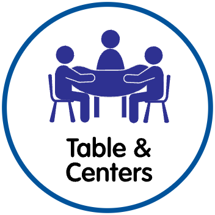

Small Group and Centers
StandardsWork with a small group of students to complete this two-part activity while other students play in Purposeful Play Centers. Rotate through four 15-minute groups in 60 minutes.
Math Skills (5 MIN.)
Practice: Describe Sizes
Place objects where all students can see them. Use the Go Around Protocol to have students answer the question. Ask: What do you notice about this group of objects?
Have each student select one object. Then, use the Go Around Protocol to have students tell what they notice about their objects. As needed, prompt students to describe the sizes of their objects.
Have students return their objects to the middle of the table. Say: Let’s sort the objects into two groups, big and small.
Ask: How should we begin sorting? Use the Go Around Protocol to have students share their ideas.
Have students work together to sort the objects into two groups.Support their metacognitive understanding. Ask:
- Why did you put that object in that group?
- How do you know if an object is small? How do you know if it is big?
After all objects have been sorted, point to the group of bigger objects. Ask: Are the objects in this group big or small? (big)
Point to the group of smaller objects. Ask: What can you say about the objects in this group? Provide an oral sentence frame. Say: These objects are all _____. (small)
Social Studies (9 MIN.)
City Sounds
Display Living in a City. Remind students that they learned about cities earlier. Say: We that cities are noisy. Let's use our imaginations to think of what a city might sound like.
Prompt students to look carefully at the photograph on the front of the card. Ask: What is something that might make a sound?
One at a time, have students name something in the city that makes a sound. Have the other students use the Agree/Disagree Protocol to check their understanding.
Then, have all students imitate the sound together. Possible responses include:
- car (beep, honk, vroom)
- train (clickety-clack, rumble, patting legs)
- bus (honk, rumble)
Have students chorally respond to the question. Ask: Are the city sounds the same as the sounds in our community? (yes, no)
Use the Go Around Protocol to have students name other things they hear in their community.
Support: Prompt students’ thinking by providing an example. Tell them they will listen to a sound they might hear in a city. Play the Listening Clip: car. Ask: What makes this sound? (car) Ask: What else in this photograph can make a sound?
Challenge: Have students extend their thinking. Tell them you will play a sound and they will tell what makes the sound. Play the “bird” Listening Clip. Ask: What makes this sound? (bird) Ask: Do you think you could hear a bird chirping in a busy city? Why or why not? Repeat with the “airplane” Listening Clip.
Observe students as they name things in the city and imitate sounds. Do students:
- Use their imagination to make city sounds? (HSS.1.3)
- Recognize environmental sounds? (VPA.2.3)
Use the Observation Record to monitor and assess students’ progress.
Transition (1 MIN.)
Have students transition to the next activity by pretending they are trains moving on tracks.